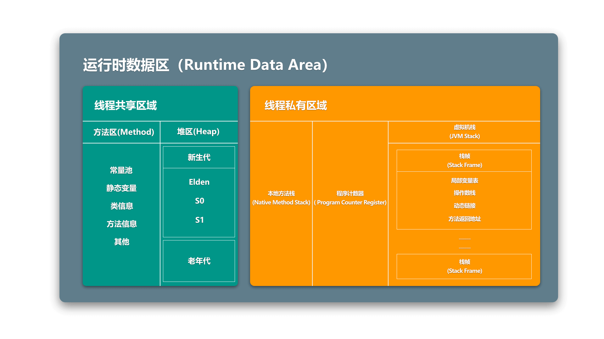
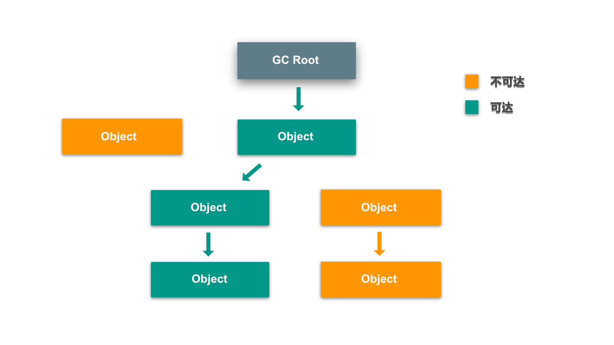
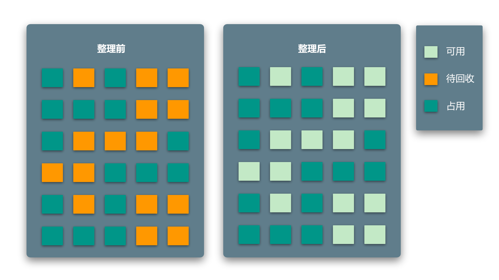
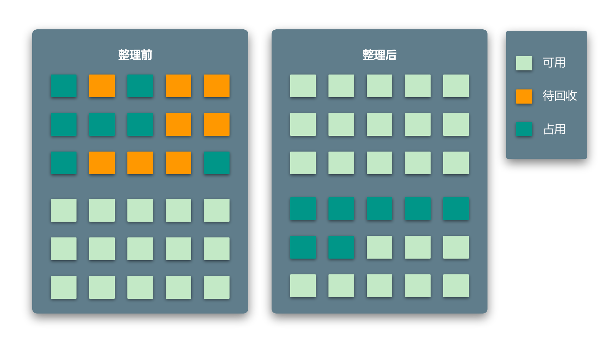
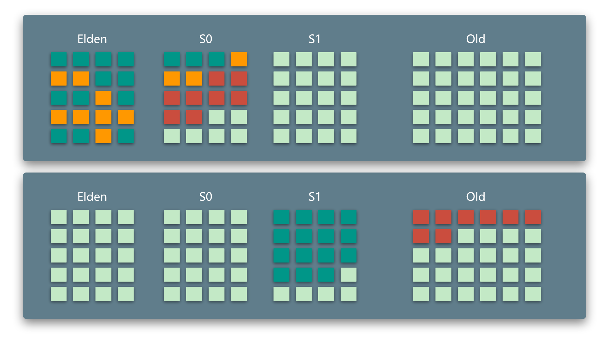

什么是内存泄漏
内存泄漏顾名思义，就是本应该被回收的无用资源并没有被正确的回收而导致内存的浪费。想搞清楚到底是什么原因导致这些资源没有被回收就需要对JVM的内存模型，以及JVM的垃圾回收机制有一定的了解。
JVM内存模型
在JVM中主要分为类加载器，内存区域(运行时数据区)，执行引擎，本地库接口和本地方法库。我们探究JVM的内存模型以及内存泄漏，这一部分的原理基本都在内存区域中。
我们先来看一下这个运行时数据区长什么样：

从图中我们可以看到，在整个内存区域中一共分为两大部分：
- 线程共享区域
- 线程私有区域
线程共享区域内存划分及用途
线程功能共享区域基本可以划分为两个主要区域：
- 方法区内存
- 堆内存
方法区内存负责存放一些静态成员，以及一些类信息和方法信息，主要由5部分构成：
- 常量池：通过
static final或String字段定义的常量 - 静态变量：通过
static定义的静态变量 - 类信息：已经被加载的
class信息 - 方法信息：已经被加载的
method信息 - 其他
堆内存则接管所有通过new关键字生成的对象，主要由2部分构成：
- 新生代：基本所有新生成的对象都会进入新生代，但在一些特殊情况下会直接存入老年代
(新生代内存容量不够或超过设定阈值) - 老年代：经过数次GC还未被回收的变量会进入老年代，减少对其进行GC的次数
其中新生代又被分为3部分：
- Elden区
- S0区
- S1区
这一部分主要为了GC机制设计，后面说到GC过程的时候会详细解释
线程私有区域内存划分及用途
线程私有区域主要由3部分构成：
- 本地方法栈：用于处理native方法的运行栈，与主题关系不大
- 程序计数器(PC寄存器)：在多线程环境下，多个线程需要共同竞争CPU资源来运行，也就是说在进行运算的时候随时可能因为CPU将资源分配给了其他线程而导致中断，
程序计数器存在的目的就是为了保证在线程重新获得CPU资源的时候，可以定位到上一次停下的位置，恢复工作状态 - 虚拟机栈(JVM栈)：对于单一线程运行来说最关键的区域，用于记录单一线程运行需要的变量信息和状态信息
虚拟机栈
虚拟机栈的内容由许多栈帧构成。其中我们每在线程内调用一个方法，都会有一个新的栈帧被压入虚拟机栈。
考虑以下例子：
1 | # kotlin |
在上面这段代码中，我们在main()方法中调用了a()，而a()的内部调用了b()方法，最终在b()中return
根据上面对于虚拟机栈和栈帧的描述我们可以知道：
- 在调用
main()方法的时候，frame_m被压入虚拟机栈 main()方法中调用a()方法，则frame_a被压入虚拟机栈，此时虚拟机栈中有2个栈帧：frame_m<-frame_aa()方法中调用了b()方法，则frame_b被压入虚拟机栈，此时虚拟机栈中有3个栈帧：frame_m<-frame_a<-frame_b- 当
b()方法中的return执行时，frame_b被弹出，此时虚拟机栈中剩余2个栈帧：frame_m<-frame_a - 此时
a()方法执行完毕，frame_a被弹出，此时虚拟机栈中剩余1个栈帧：frame_m - 最后
main()方法执行完毕，frame_m被弹出，虚拟机栈清空
每个栈帧都包含了当前方法在运行时需要保存的信息：
- 局部变量表：保存当前方法中用到的局部变量的
引用，指向堆区的对象 - 操作数栈：如果对计算机体系结构有所了解的话应该不难理解，操作数栈用来对实际的操作数进行
运算 - 动态链接：每个JVM虚拟机内存都是有限的，所以不可能做到将所有
类全部加载到内存区域中，所以相对于静态变量及方法的加载，动态链接主要用于在运行过程中动态地加载类信息 - 方法返回地址：这一部分和
程序计数器较为相似，因为每个栈帧都对应一个方法，参考上面的例子，b()方法执行完毕后需要返回到a()方法中继续运行下去，方法返回地址的作用就是用来记录方法跳转前的运行位置，以便恢复工作状态
垃圾回收(GC)机制 & 内存泄漏
探究垃圾回收机制是搞明白内存泄漏原因其中的重要一步
GC一共分为两部分：
- 标记：先通过一套
垃圾标记算法将所有需要被GC的对象做好标记，方便垃圾回收算法回收垃圾 - 回收：真正将垃圾对象回收掉，并释放资源，并整理内存
垃圾标记算法
经典的垃圾标记算法一共只有两种：
- 引用计数法
- 可达性分析法
引用计数法
这个其实比较好理解，所谓引用计数法就是，一个对象每新增一个引用，就+1计数，每减少一个引用，就-1计数，若该对象的引用计数最终为0则将该对象回收掉。
这个方法现在基本已经推出历史舞台了，因为它看上去简单有效，其实存在着一个很大的问题，来看如下一段代码：
1 | class A { |
下面来分析一下上面这段代码的执行过程：
- 创建对象
x:A，x引用计数+1，x -> 1 - 创建对象
y:A，y引用计数+1，y -> 1 x.a赋值为y，y引用计数+1，y -> 2y.a赋值为x，x引用计数+1，x -> 2x置空，x引用计数-1，x -> 1y置空，y引用计数-1，y -> 1- 执行
gc()
通过上面的分析我们发现，虽然我们将可见的引用都进行了置空，但最终执行GC的时候x和y的引用计数均不为0，所以这种情况下引用计数算法并不能完全回收掉所有应该回收的对象，从而造成了内存泄漏
可达性分析法
这一种标记算法在目前使用的非常广泛。其根本思想是，将所有的对象引用关系看作是一个图，看后跟踪引用链，若一个对象的和根节点(GC Root)之间不可达，也就是说该对象不存在引用，则该对象被定义为垃圾，需要被回收
其机制如下图所示：

到这里会发现在这一套算法中，一切的判别标准都与GC Root有关。也就是说如果有一个对象对程序运行不再有用，但是仍然存在一个它和GC Root之间依旧可达，这个时候就发生了内存泄漏。
根据上面的描述我们可以看出，GC Root的生命周期一定会比泄漏掉的对象的生命周期要长，这样才会存在引用关系，如果GC Root的生命周期已经结束，它就无法继续引用其他对象，也就不存在内存泄漏的问题了
所以在这里可以总结一条结论：内存泄漏是由长生命周期对象引用短生命周期对象引起的
那么哪些对象会成为GC Root呢？
虚拟机栈中正在引用的对象：前面提到过，虚拟机栈的栈帧中存在这局部变量表，它里面的引用会指向堆内存中的一个对象本地方法栈中正在引用的对象：类似虚拟机栈的情况，不多赘述静态属性对象：静态属性对象生命周期非常长，若持有其他短生命周期对象则会导致短生命周期对象不能及时释放，造成内存泄漏方法区常量对象：类似静态属性对象，不多赘述
垃圾回收算法
垃圾回收算法有很多种，经过一系列的演变，现在已经发展得相对最初而言比较复杂了
标记清除算法
这种算法非常简单，经由前面讲到的标记算法，简单地将被标记为垃圾的对象回收掉。标记清除算法效率比较高，但是有一个非常致命的缺陷，如下图所示

从图中可以发现，虽然所有需要被回收的对象都已经回收掉了，但是留下的内存空间变得非常零散，如果这个时候需要申请一个较大的需要连续内存空间的对象，虽然内存容量还够，但是也不能成功的创建
复制清除算法
这种方法也比较暴力，简单地将内存一分为二，在回收无用对象的同时，将仍然在使用中的对象直接按顺序copy到另外一半内存中，使得空余可用内存一直是连续的状态

这种方式存在一个很明显的问题，那就是可用内存空间被限制在了内存总量的一半，这个资源损耗还是非常大的
分代收集算法
这种方法非常经典，也非常通用。利用生存时间给对象划分存活区域，分别按照不同的周期进行GC，其中Elden，S0，S1统称新生代，剩下的内存区域被称为老年代

如图中所表示，分代收集算法主要有如下几条规则：
- 所有新创建的对象都从
Elden区域创建 - 其中
S0和S1区域类似复制清除算法，永远保证其中一块区域是干净，连续的 - 每次触发GC的时候，将
Elden和正在使用的S区中的垃圾对象回收，并将两块区域中所有的存活对象copy到另一块干净的S区中，所有存活对象存活计数+1 - 若有一些存活对象的存活计数大于一个阈值(图中红色块)，则在GC后这些对象将被转移至
老年代，减少对其执行GC的次数以提升性能 - 若创建一些对象时，该对象需要的容量大于一定阈值，则直接将它移动到
老年代 - 若创建一些对象时
Elden区内存资源不足，则会向老年代借用一部分内存资源，这样一来这个对象也是被存放在老年代的
总结
就目前最经常接触的垃圾回收机制来说，基本都离不开可达性分析标记法和分代收集法
基于可达性分析标记法去标记内存垃圾的情况下，出现内存泄漏的直接原因就是长生命周期对象引用短生命周期对象，导致短生命周期对象无法被释放，在长生命周期对象的生命周期内造成内存泄漏